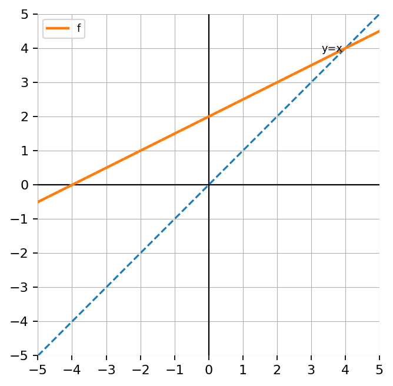
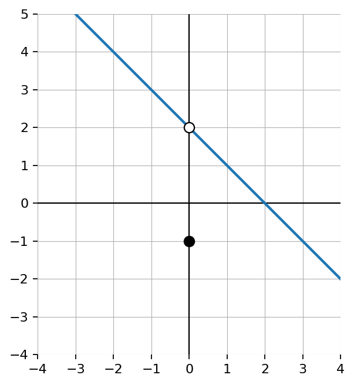
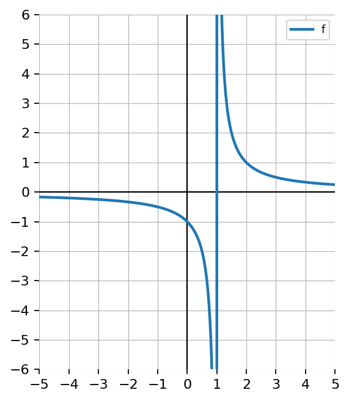
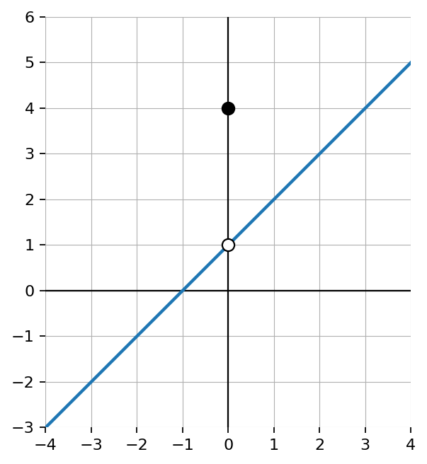
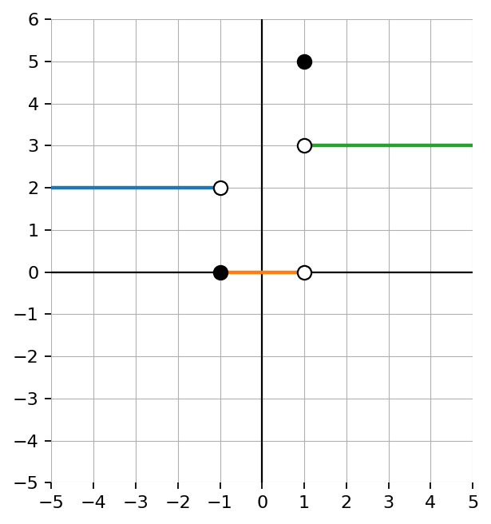

Does the inverse relation of \(\{(1,2),(2,4),(3,4),(4,7)\}\) represent a function? Explain.
Find the inverse of \(f(x)=\frac{3x-4}{x+2}\). State any restrictions.
A graph is reflected across \(y=x\). Explain how:

Create a function with a square root inverse.
If \(f(x)=2x+7\), evaluate each.
\(f(0)\)
\(f(3)\)
\(f(-4)\)
\(f(10)\)
If \(h(x)=3x^2-2x+1\), evaluate each.
\(h(1)\)
\(h(-1)\)
\(h(0)\)
\(h(2)\)
Fill in the blanks.
In function notation, \(f(3)\) means the ______ value when the input is ______.
The expression \(f(x+2)\) means replace every \(x\) in the formula with ______.
Equivalent expressions have the same value for every allowed ______.
A student says:
“\(f(x)\) means \(f\) times \(x\).”
What is wrong with the statement? Explain what \(f(x)\) means.
If \(p(x)=3x-5\), write and simplify each expression.
\(p(x+4)\)
\(p(2x)\)
\(p(x)-p(2)\)
\(p(x+1)-p(x)\)
A function is described by the rule:
“Multiply the input by \(4\), then subtract \(9\).”
Write a function formula.
Find the output when the input is \(6\).
Find the input when the output is \(23\).
Explain how input and output are related.
The same function is represented three ways.
Equation: \(f(x)=2x-3\)
Table:
| \(x\) | \(0\) | \(1\) | \(2\) | \(3\) |
|---|---|---|---|---|
| \(f(x)\) | \(-3\) | \(-1\) | \(1\) | \(3\) |
Description: “Double the input, then subtract \(3\).”
Explain how the equation, table, and description all show the same relationship.
Create a function-readiness task that satisfies all of the following:
Then:
Write your original task.
Solve the task completely.
Explain which algebraic skills are being used.
Explain how the task prepares a student for Unit 1 function work.
Use the graph to determine \(\lim_{x\to 0} f(x)\) and \(f(0)\).

Use the graph to determine whether the limit exists at the vertical asymptote. Explain the one-sided behavior.

A student says \(\lim_{x\to 0} f(x)=4\) because \(f(0)=4\). Use the graph to explain whether the student is correct.

Use the graph to classify each special behavior shown as a jump, hole, point value difference, or vertical asymptote. Then state which limits exist.
